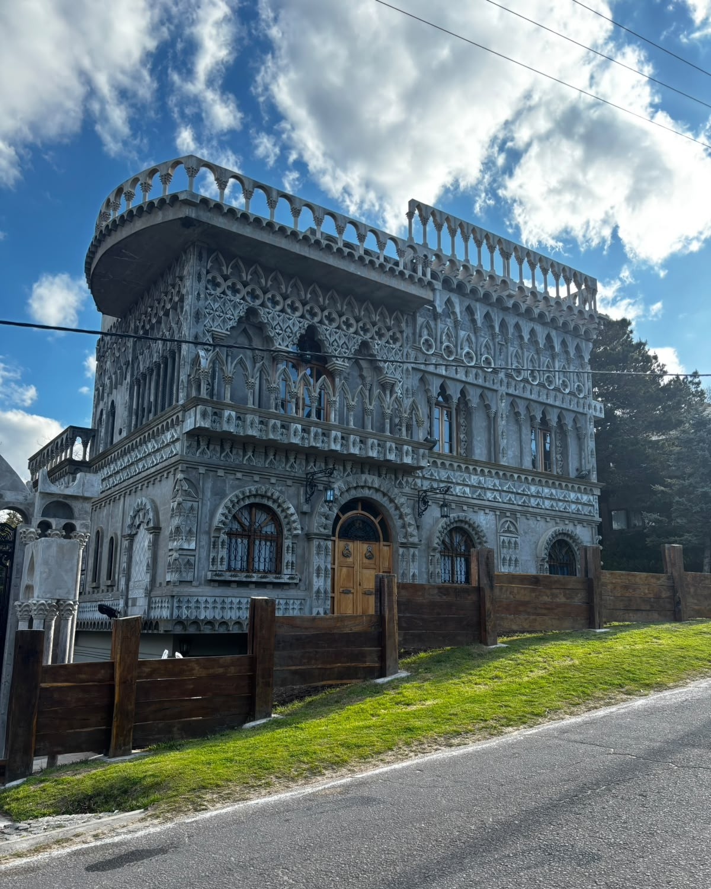
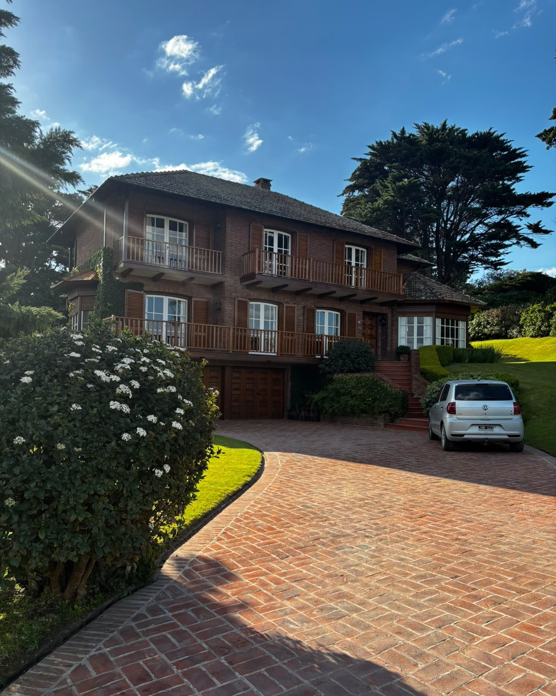
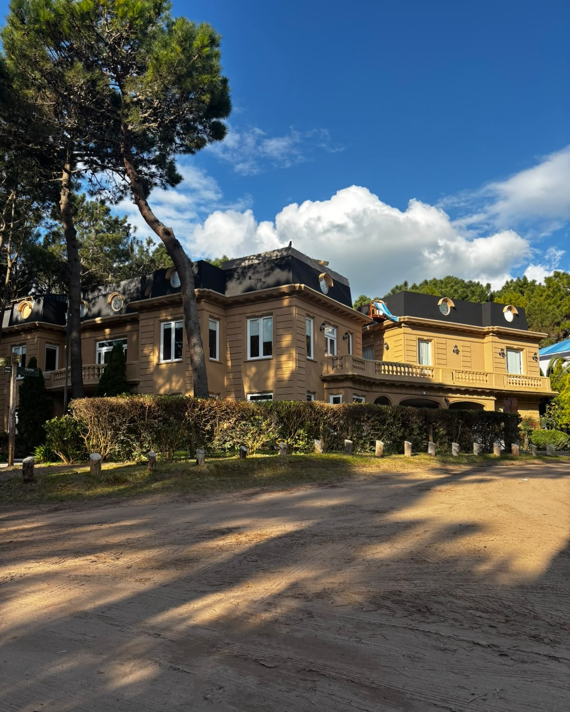
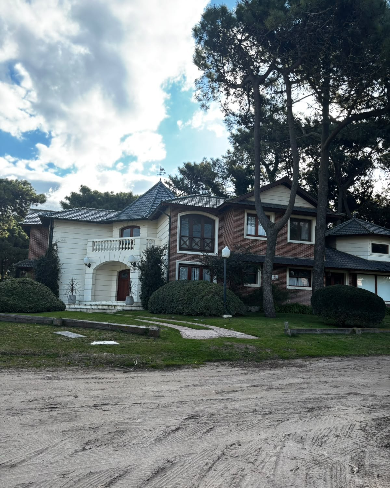
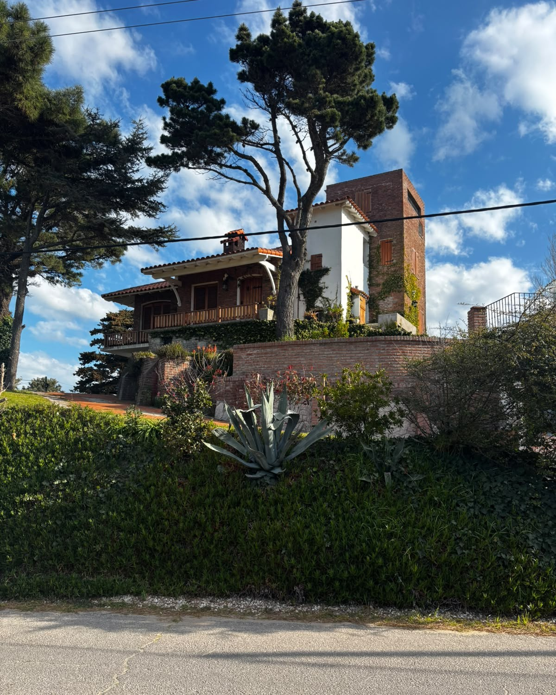

Palacio Gotico, una de las construcciones mas emblematicas.

Construccion a pocos metros del Golf.

Av del Mar y Del Jilguero.

Penelope y Troya, Pinamar norte

Av del Libertador y Cefiro.

Casa sobre el "Loma del tanque", Av. Martin Pescador.